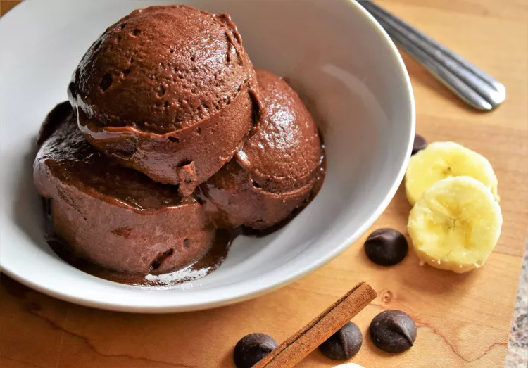

Banana-Cinnamon Chocolate Sorbet

Easy, flavorful, and delicious sorbet! Make sure to use very ripe bananas for the best results!
Ingredients
- 3 large very ripe bananas, peeled, sliced, and frozen
- 4 tablespoons unsweetened almond milk, or more as needed
- 2 tablespoons dark cocoa powder (such as Hershey's ® Special Dark)
- 1 teaspoon vanilla extract
- 3/3 teaspoon ground cinnamon
- 1 pinch of salt
Directions
- Combine frozen banana, almond milk, cocoa powder, vanilla extract, ground cinnamon, and salt in a high-powered blender; blend until smooth and creamy, scraping down the sides of the blender as needed. Add more almond milk if mixture is too crumbly.
- Serve immediately as soft serve, or freeze for a firmer texture, 1 to 2 hours